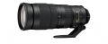

器材库 > 35mm画幅AF变焦镜头 > AF-S 200-500/5.6E ED VR

详细规格
镜头类型
超远摄变焦镜头
发布日期
2015-08-05
厂家推荐价格
8,600.00 （人民币）
焦距
200~500mm
最大光圈
F5.6
最小光圈
F32
镜头结构
19片/12组
低/超低色散镜片
3片
光圈叶片
9(圆形)片
最近对焦距离
220cm
驱动马达
SWM（宁静波动马达）
滤镜口径
95mm
镜头卡口
Nikon AF, Nikon F
防抖
是
颜色
黑色
尺寸
最大直径约108 x 267.5（当镜头收回时距相机镜头卡口的距离）mm
重量
约2300（包括三脚架连接环）；约2090（不包括三脚架连接环）g
liusm12342017-07-04 22:554.75 分
操作性 5.00耐用性 4.50性价比 5.00解像力 4.50色彩还原 4.50机械结构 5.00
康花花2017-03-16 23:024.42 分
操作性 4.50耐用性 4.00性价比 5.00解像力 4.50色彩还原 4.50机械结构 4.00
807110842016-08-16 19:255 分
操作性 5.00耐用性 5.00性价比 5.00解像力 5.00色彩还原 5.00机械结构 5.00
lsqbt1682016-03-06 23:224.17 分
操作性 4.00耐用性 4.50性价比 5.00解像力 4.50色彩还原 4.00机械结构 3.00
兮南兮蓝2015-12-14 22:02
兰青2015-10-28 22:194.58 分
操作性 4.50耐用性 4.50性价比 5.00解像力 4.50色彩还原 4.50机械结构 4.50
产品图 / 样片
评测 / 相关文章
- 详细内容 （存档）
- ［资讯］尼康AF-S 200-500/5.6E ED VR样片欣赏 （存档）
相关文章
- ［资讯］尼康AF-S 200-500/5.6E ED VR样片欣赏 （存档）
- ［资讯］尼康发布AF-S 200-500/5.6E ED VR （存档）
- ［试用］尼康200-500高清实拍中国网球公开赛 （原站已下线）
- ［试用］尼康200-500高清实拍游泳世界杯北京站 （原站已下线）
- ［试用］新一代平民大炮登场 尼康200-500/5.6测评 （原站已下线）
- ［试用］只求实拍 尼康200-500高清中甲比赛 （原站已下线）
- ［行情］200-500/5.6尼康长焦不二选择 （原站已下线）
- ［行情］跌破7千大关 尼康200-500震撼低价 （原站已下线）